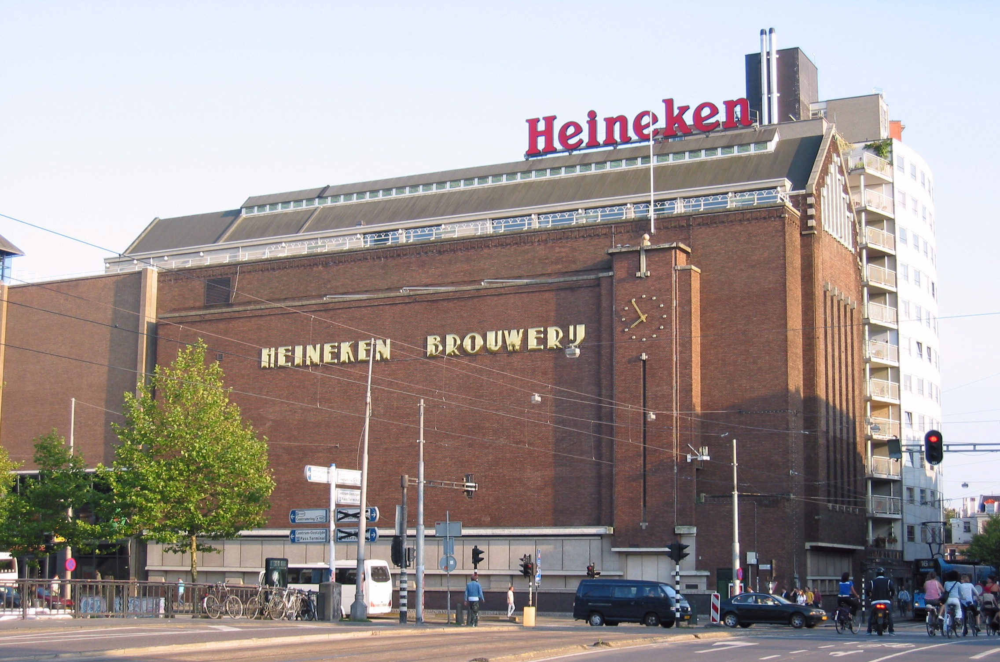

Heineken Experience

Ticket Price (18+ years): €23.00
The Heineken Experience, located in Amsterdam, is a historic brewery and corporate visitor center for the internationally distributed Dutch pilsner, Heineken beer. In 1991, the brewery opened its doors to the public through a visitor centre, known as the "Heineken Treat and Information Centre" (Dutch: Heineken ontvangst- en informatiecentrum). Although the Heineken Experience began in 1991, there were tours of the original brewery while it was still fully operational. The attraction grew to become one of Amsterdam's most popular tourist attractions and by 2001 the visitor centre changed its name to "Heineken Experience".[2]
| Working Hours |
| Mon-Fri |
10:30-19:30 |
| Sat |
10:30-21:00 |
| Sun |
10:30-19:30 |
Anne Frank House
Ticket Price (18+ years): €16.00
The Anne Frank House (Dutch: Anne Frank Huis) is a writer's house and biographical museum dedicated to Jewish wartime diarist Anne Frank. The building is located on a canal called the Prinsengracht, close to the Westerkerk, in central Amsterdam in the Netherlands.
During World War II, when the Netherlands was occupied by Germany, Anne Frank hid from Nazi persecution with her family and four other people in hidden rooms, in the rear building, of the 17th-century canal house, later known as the Secret Annex (Dutch: Achterhuis). She did not survive the war but her wartime diary was published in 1947. Ten years later the Anne Frank Foundation was established to protect the property from developers who wanted to demolish the block.
The entire museum, which occupies the three adjacent buildings on the street front of Prinsengracht 263 to 267,[1] opened on 3 May 1960. It preserves the hiding place (the Secret Annex at rear of 263), with the other buildings expanding the permanent exhibition on the life and times of Anne Frank, and has an exhibition space about all forms of persecution and discrimination. In 2017, the museum had 1.27 million visitors and was the third most visited museum in the Netherlands, after the Van Gogh Museum and the Rijksmuseum.
| Working Hours |
| Mon-Fri |
09:00-22:00 |
| Sat |
10:30-21:00 |
| Sun |
10:30-19:30 |
Van Gogh Museum
Ticket Price: €20.00
The Van Gogh Museum is a Dutch art museum dedicated to the works of Vincent van Gogh and his contemporaries in the Museum Square in Amsterdam South, close to the Stedelijk Museum, the Rijksmuseum, and the Concertgebouw.[7] The museum opened on 2 June 1973,[1] and its buildings were designed by Gerrit Rietveld and Kisho Kurokawa.
The museum contains the largest collection of Van Gogh's paintings and drawings in the world. In 2017, the museum had 2.3 million visitors and was the most-visited museum in the Netherlands, and the 23rd-most-visited art museum in the world. In 2019, the Van Gogh Museum launched the Meet Vincent Van Gogh Experience, a technology-driven "immersive exhibition" on Van Gogh's life and works, which has toured globally.
| Working Hours |
| Mon-Fri |
09:00-20:00 |
| Sat |
10:30-19:00 |
| Sun |
10:30-19:30 |